- XeF2, Br3-
- XeF4, ICl4-
- CO2, I3-
- MnO4-, ClO3-
- 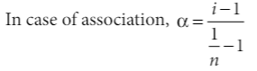
- 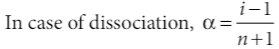
- 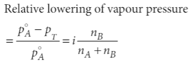
- 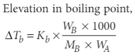
- D2+/D and B2+/B
- B2+/B and D2+/D
- D2+/D and C2+/C
- C2+/C and D2+/D
Statement 2 : Ionization energy increases abruptly at third ionization.
- Both statements 1 and 2 are true.
- Statement 1 is true but statement 2 is false.
- Statement 1 is false but statement 2 is true.
- Both statements 1 and 2 are false.
- 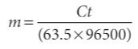
- 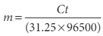
- 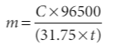
- 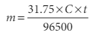
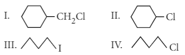
- I
- II
- III
- IV
Reason: Adenine specifically forms hydrogen bonds with guanine whereas cytosine forms hydrogen bonds with thymine.
- Both assertion and reason are true and reason is the correct explanation of assertion.
- Both assertion and reason are true but reason is not the correct explanation of assertion.
- Assertion is true but reason is false.
- Both assertion and reason are false.

- 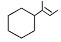
- 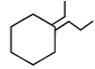

- SiO2, Si, Na2SiO3
- Si(OH)4, SiO2, Na2SiO3
- Si(OH)4, Si, SiO2
- SiO2, SiCl4, Na2SiO3
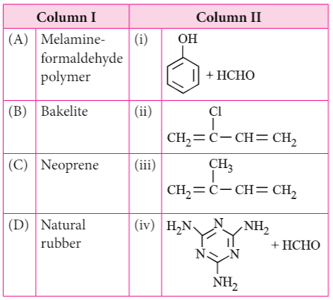
- (A) → (iv), (B) → (ii), (C) → (i), (D) → (iii)
- (A) → (i), (B) → (iii), (C) → (iv), (D) → (ii)
- (A) → (iv), (B) → (i), (C) → (ii), (D) → (iii)
- (A) → (ii), (B) → (iv), (C) → (iii), (D) → (i)
- 0.111 atm
- 0.123 atm
- 0.133 atm
- 0.222 atm
- 4
- 6
- 9
- 12
- V3+
- Cr3+
- Fe3+
- Co3+
Absolute entropies are X = 120 J K–1 mol–1, Y = 213.8 J K–1 mol–1 and Z = 197.9 J K–1 mol–1.
What will be the entropy change at 298 K and 1 atm?
- 291.7 J K–1
- 255 J K–1
- 213.8J K–1
- 257.3J K–1
- 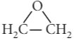
- 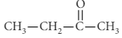
- 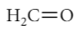
- 3.12 Å
- 1.67 Å
- 1.71 Å
- 2.12 Å
- These are the plots of ΔfG° vs T.
- Each plot is a straight line unless phase change occurs.
- These plots tell about the kinetics of reduction process.
- These plots are based on thermodynamic concepts.
- 1.3 L
- 2.4 L
- 0.9 L
- 4.6 L
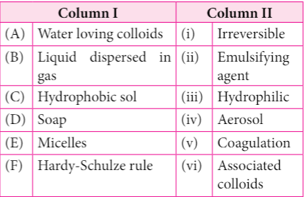
- (A) → (iii), (B) → (iv), (C) → (i), (D) → (ii), (E) → (vi), (F) → (v)
- (A) → (i), (B) → (vi), (C) → (v), (D) → (iii), (E) → (iv), (F) → (ii)
- (A) → (vi), (B) → (iv), (C) → (v), (D) → (ii), (E) → (iii), (F) → (i)
- (A) → (ii), (B) → (iii), (C) → (iv), (D) → (v), (E) → (vi), (F) → (i)
(i) Heavy water is used as a moderator in nuclear reactors.
(ii) Heavy water is more associated than ordinary water.
(iii) Heavy water is more effective solvent than ordinary water.
Which of the above statements are correct?
- (i) and (ii) only
- (i), (ii) and (iii) only
- (ii) and (iii) only
- (i) and (iii) only
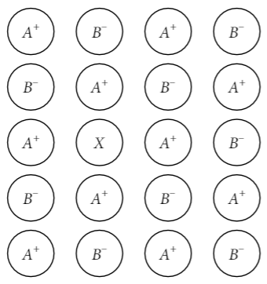
- Electron trap, because an electron is present here.
- Metal deficient centre, since negative charge is present here.
- F-centre, since it imparts colour to the crystal.
- F-centre, since it is responsible for positive charge on the crystal.
Reason : Higher carboxylic acids are practically insoluble in water due to the increased hydrophobic interaction of hydrocarbon part.
- Both assertion and reason are true and reason is the correct explanation of assertion.
- Both assertion and reason are true but reason is not the correct explanation of assertion.
- Assertion is true but reason is false.
- Both assertion and reason are false.
Y can be obtained by Etard’s reaction. Z undergoes disproportionation reaction with concentrated alkali. X could be
- 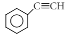
- 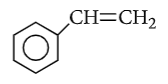
- 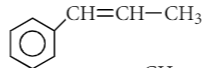
- 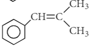
- concentration of ‘A’
- square of concentration of ‘A’
- under root of the concentration of ‘A’
- cube of concentration of ‘A’
- 4 × 10–1Δ₀
- 4.0Δ₀
- 8.0 Δ₀
- 8 × 10–1Δ₀
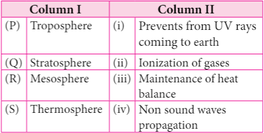
P,Q,R,S are respectively
- ii, iv, iii, ,i
- iv, ii, i, iii
- iii, i, iv, ii
- i, iii, ii, iv
(i) Both form oxyacids H3PO3 and H3PO4 respectively.
(ii) In P4O6, each P is joined to four O and in P4O10, each P is joined to six O atoms.
(iii) In P4O6, each P is joined to three O and in P4O10, each P is joined to four O atoms.
(iv) In P4O6, each P is joined to three O and in P4O10, each P is joined to five O atoms.
- (i) and (iii) only
- (i) and (iv) only
- (ii) and (iii) only
- (iii) and (iv) only
- Soaps do not form micelles below a particular concentration.
- Detergents can be used both in hard water and soft water.
- Calcium and magnesium salts of higher fatty acids are insoluble in water.
- Hydrolysis of fat by an acid is called saponification.
- CaCO3
- Na2CO3
- K2CO3
- CaSO4·2H2O
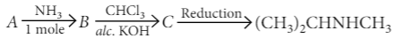
- Ethyl halide
- Iso-propylamine
- n-Propyl halide
- Iso-propyl halide
- 0.69 g and 0.048 g
- 0.506 g and 0.086 g
- 0.345 g and 0.024 g
- 0.91 g and 0.72 g
Na+ : 50.1, Cl- : 76.3, H+ : 349.6, CH3COO- : 40.9, Ca+2 : 119.0.
What will be the limiting molar conductivities of CaCl2, CH3COONa and NaCl respectively?
- 97.65, 111.0 and 242.8 S cm
2 mol-1 - 195.3, 182.0 and 26.2 S cm
2 mol-1 - 271.6, 91.0 and 126.4S cm
2 mol-1 - 119.0, 1024.5 and 9.2S cm
2 mol-1
- 5.1
- 3.9
- 10.5
- 8.5
- HClO4 < HNO3 < H2CO3 < B(OH)3
- HNO3 < HClO4 < B(OH)3 < H2CO3
- B(OH)3 < H2CO3 < HClO4 < HNO3
- HClO4 < HNO3 < B(OH)3 < H2CO3
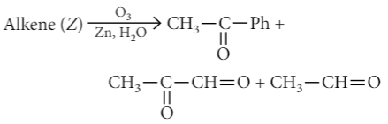
Alkene (Z) can be
- 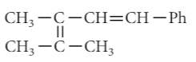
- 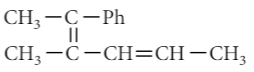
- 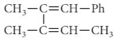
- 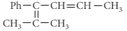
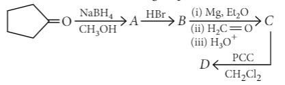
- 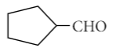
- 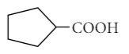
- 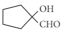
- 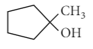
- All lanthanides are solid at room temperature.
- Their usual oxidation state is +3.
- They can be separated from one another by ion- exchange method.
- Ionic radii of trivalent lanthanides steadily increase with increase in atomic number.
- 3.0 g
- 2.7 g
- 0.3 g
- 0.27 g
- 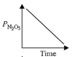
- 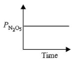
- 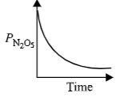
- 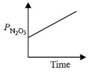
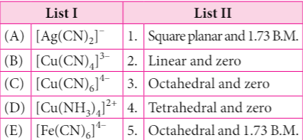
- A – 2, B – 4, C – 5, D – 1, E – 3
- A – 5, B – 4, C – 1, D – 3, E – 2
- A – 1, B – 3, C – 4, D – 2, E – 5
- A – 4, B – 5, C – 2, D – 1, E – 3
(i) NaNO2/HCl, 280 K (ii) KI (iii) Cu powder The final product will be
- 3,3′-diaminobiphenyl
- 3-iodoaniline
- 3-nitroiodobenzene
- 3,3′-dinitrobiphenyl.
- 3
- 2
- 5
- 4
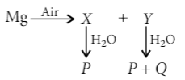
X,Y,P,Q are respectively
- MgO, Mg(OH)2, Mg3 N2, N2
- MgO, Mg3N2, Mg(OH)2, NH3
- MgO, Mg3N2, Mg(OH)2, N2
- MgO, MgCO3, Mg(OH)2, CO2
Reason : C6H5CH(C6H5)Br is less reactive than C6H5CH(CH3)Br in SN1 reactions.
- Both assertion and reason are true and reason is the correct explanation of assertion.
- Both assertion and reason are true but reason is not the correct explanation of assertion.
- Assertion is true but reason is false.
- Both assertion and reason are false.
- D-glucose, D-fructose and D-galactose
- D-glucose, D-fructose and D-mannose
- D-glucose, D-mannose and D-galactose
- D-fructose, D-mannose and D-galactose
Statement 2 : In NaCl, there are approximately 106 Schottky pairs per cm3 at room temperature.
- Both statements 1 and 2 are true.
- Statement 1 is true but statement 2 is false.
- Statement 1 is false but statement 2 is true.
- Both statements 1 and 2 are false.
n-butane, 1-butanol, ethoxyethane and 1-propanol
- 1-propanol < n-butane < ethoxyethane < 1-butanol
- n-butane < ethoxyethane < 1-propanol < 1-butanol
- n-butane < 1-propanol < ethoxyethane < 1-butanol
- 1-propanol < n-butane < 1-butanol < ethoxyethane.
- 8
- 4
- 16
- 32
- Polymethyl methacrylate
- Nucleic acid
- Polystyrene
- Protein
1. as a catalyst
2. to make the fused mixture very conducting
3. to lower the fusion temperature
4. to decrease the rate of oxidation of carbon at the anode.
- 2,3
- 1,2
- 2,3,4
- 3,4